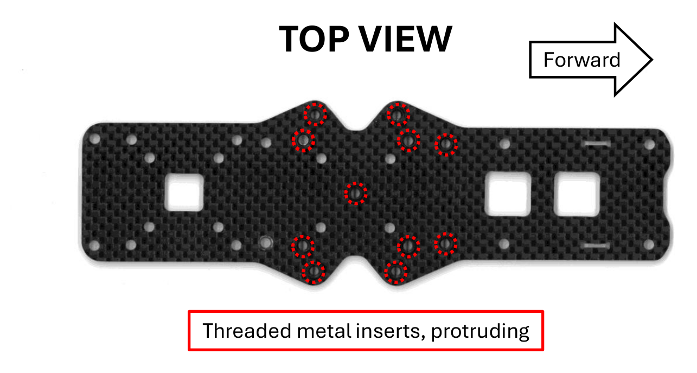
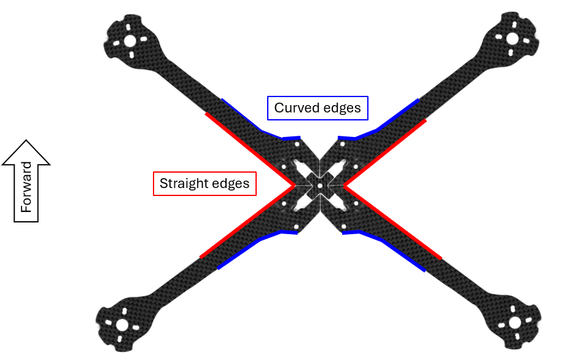
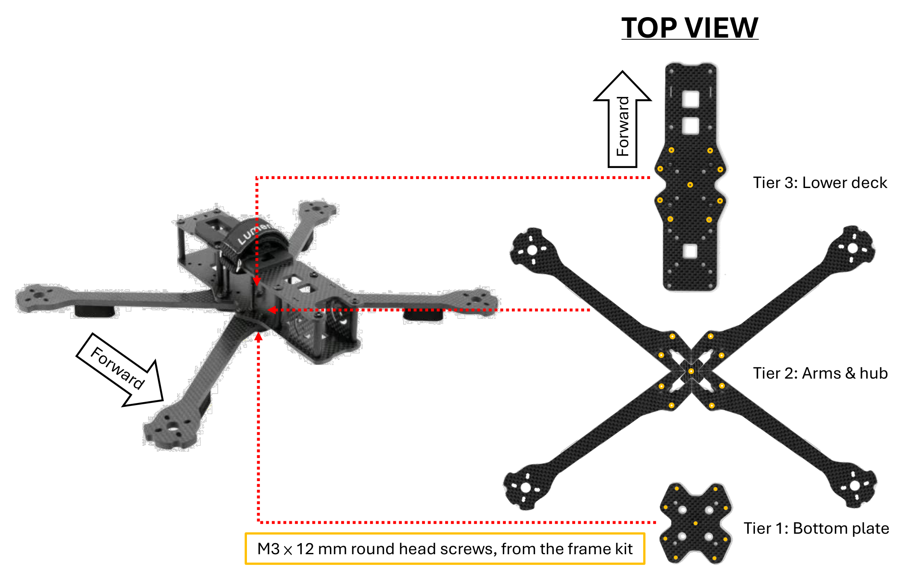
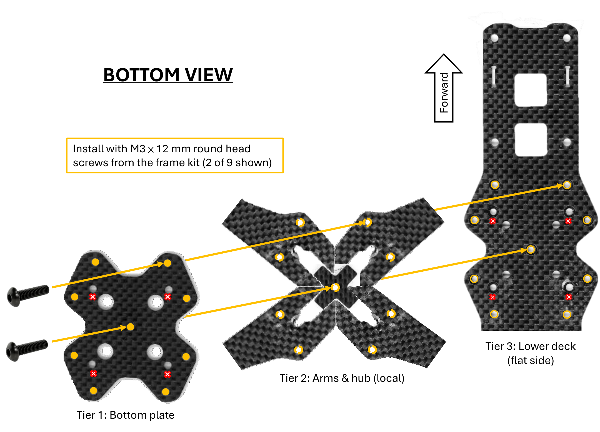

Task 4: Assemble the lower frame
Assemble the bottom plate, hub, arms, lower deck, and foam feet.
Parts required
- Frame kit
Tools required
- 2.0 mm Allen key
Step 1. Identify the frame parts
- Retrieve the frame package from the supplies shelf. Open it carefully because the bag is needed later for parts storage.
- Remove the hub, bottom plate, four motor arms, and lower deck.
- Do not confuse the lower deck with the upper deck. The lower deck has threaded metal inserts that protrude and no Lumenier marking. The upper deck has no protrusions and does have the Lumenier marking.

Fig. 4a. Arm hub.

Fig. 4b. Bottom plate.

Fig. 4c. Motor arm.

Fig. 4d. Lower deck. Note the protruding metal inserts and no Lumenier marking.
Step 2. Press the hub into the arms
- Lay out the four arms in the pattern shown in Fig. 4e.
- Press the hub into the middle until all five pieces are held together by friction.
- Keep the curved edges facing front or rear and the straight edges facing the sides.

Fig. 4e. Assemble the hub and arms by friction.
Step 3. Build the lower-frame stack
- Place the arm-and-hub assembly on top of the bottom plate.
- Place the lower deck on top of the arm-and-hub assembly.
- Carefully flip the entire stack so the bottom plate is on top.
- Line up all nine screw holes shown in Fig. 4f.
- From the frame kit, use only the M3 × 12 mm round-head screws for this task.
- Insert all nine screws and tighten them in a crisscross pattern with the 2.0 mm Allen key.
Frame-kit screw order.
The four small screw bags in the frame kit are arranged in ascending length: M3 × 8, M3 × 12, M3 × 14, and M3 × 30.
The four small screw bags in the frame kit are arranged in ascending length: M3 × 8, M3 × 12, M3 × 14, and M3 × 30.
| Bag order | Screw | Use in this manual |
|---|---|---|
| Shortest | M3 × 8 mm round head | Upper deck and frame mating |
| Second shortest | M3 × 12 mm round head | This task |
| Third shortest | M3 × 14 mm round head | Reserved from frame kit |
| Longest | M3 × 30 mm round head | FC/ESC stack |

Fig. 4f. Lower-frame stack before the screws go in.

Fig. 4g. Bottom view of the assembled lower frame.
Step 4. Install the foam feet
- Retrieve the four foam feet from the frame kit.
- Install one foot at the end of each arm on the bottom side.
- Maintain positive control of the remaining parts and the empty bag.

Fig. 4h. Install the foam feet on the bottom side of the arms.
Common errors
- Using the upper deck instead of the lower deck.
- Installing the lower deck upside down.
- Driving the screws from the wrong side of the frame stack.
- Mixing up the M3 × 12 mm screws with the other frame-kit screw bags.
- Mixing up the M3 × 12 mm screws with the other frame-kit screw bags.
- Installing the foam feet on the top side instead of the bottom side.